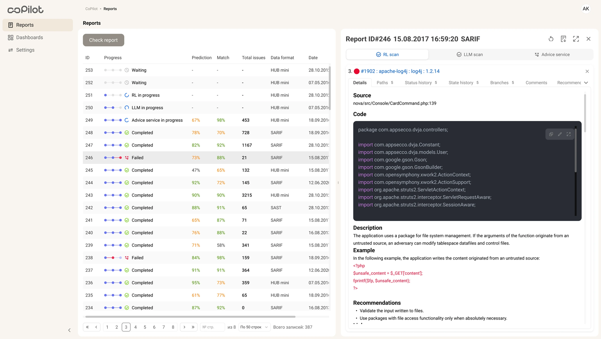

CoPilot: security reports
A split-screen workspace where AppSec analysts review reports and make decisions without losing context.
Context
AppSec teams reviewed reports, vulnerabilities, CWE, source evidence, service recommendations and decision history — but all of it lived in different places. With hundreds of findings, analysts spent time not on the decision itself but on piecing context together, and every switch between tools raised the risk of missing something or closing a finding at random.
Design challenge
The goal was not to add yet another data screen, but to build an order for decision-making: what is visible right away, where a recommendation is verified and which action is safe to take.

My role
I led the full design cycle: interviews and observation of review sessions, information architecture, the split-screen workspace, decision-making scenarios and components for the security UI. I worked with PM, security analysts, DevSecOps and engineering.
Goals
- Break down the AppSec analysts' review cycle and the points where context is lost
- Design the IA: what is visible right away and what opens on demand
- Build a split-screen workspace with the report list, details and actions
- Show evidence to build trust in recommendations: source, code, rule, CWE and parameters
Solution
A split-screen workspace instead of page-to-page navigation: I replaced the list → page → back flow with two panels: reports stay on the left while details and actions open on the right. I chose this pattern after comparing full-page, drawer and split-screen options.

Left panel / reports overview: each row shows progress, prediction, match, issue count, format and date. The analyst switches between reports without losing the overall list.

Right panel / detailed report analysis: the details bring together service recommendations, severity, the vulnerability list, parameters, rule and triage actions. After testing, I reduced the tabs, pinned severity/status and added anchors to the findings.

Outcome
- 120+ hours a month the team no longer loses on piecing context together between tools.
- Review stopped breaking into jumps: the report, vulnerability details, evidence and actions live on one screen, so the analyst keeps the decision in one context.
- Decisions stopped being blind: severity, CWE, source evidence, rule and parameters sit next to the recommendation — it can be checked, not taken on faith.